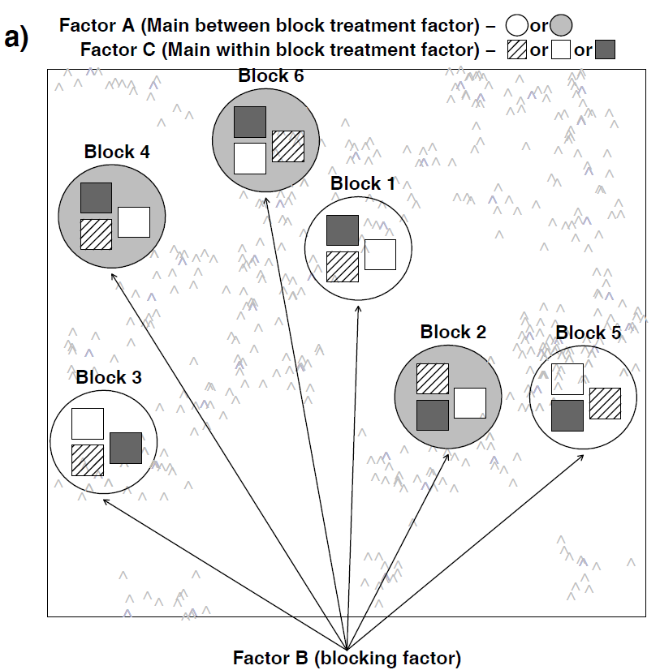
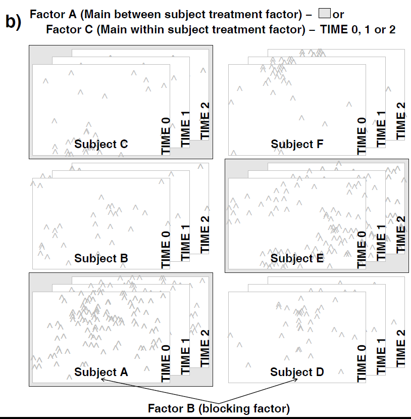
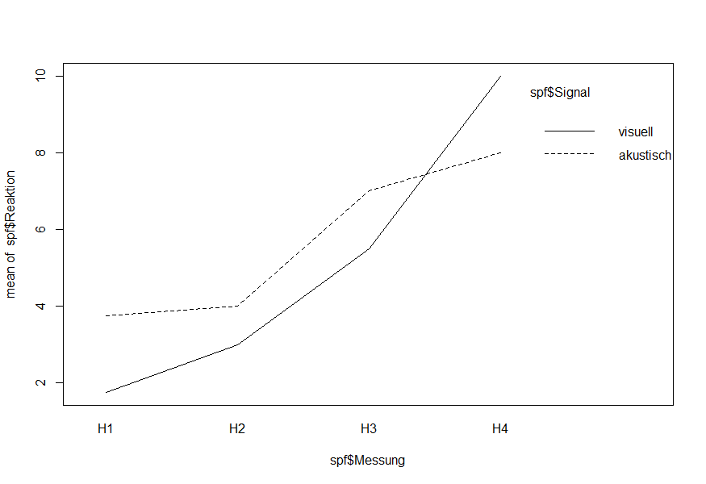
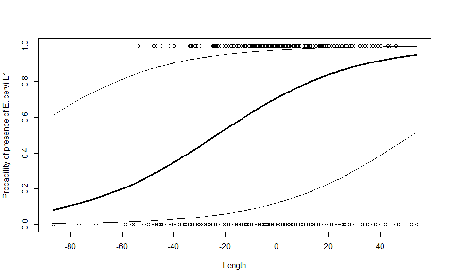
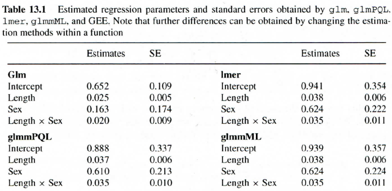

Statistik 5
Von linearen Modellen zu GLMMs
In Statistik 5 lernen die Studierenden Lösungen kennen, welche die diversen Limitierungen von linearen Modellen überwinden. Während generalized linear models (GLMs) aus Statistik 4 bekannt sind, geht es jetzt um linear mixed effect models (LMMs) und generalized linear mixed effect models (GLMMs). Dabei bezeichnet generalized die explizite Modellierung anderer Fehler- und Varianzstrukturen und mixed die Berücksichtigung von Abhängigkeiten bzw. Schachtelungen unter den Beobachtungen. Einfachere Fälle von LMMs, wie split-plot und repeated-measures ANOVAs, lassen sich noch mit dem aov-Befehl in Base R bewältigen, für komplexere Versuchsdesigns/Analysen gibt es spezielle R packages. Abschliessend gibt es eine kurze Einführung in GLMMs, die eine Analyse komplexerer Beobachtungsdaten z. B. mit räumlichen Abhängigkeiten, erlauben.
Lernziele
Split-plot und Repeated-measures ANOVAs
Die Idee
Beginnen wir mit einer konventionellen 2-faktoriellen ANOVA wie wir sie aus Statistik 2 kennen. Wie in allen linearen Modellen (und ebenso in GLMs) ist eine wesentliche Modellvoraussetzung die Unabhängigkeit der Beobachtungen voneinander. In der folgenden Abbildung ist das für ein experimentelles Setting veranschaulicht, etwa unseren Sortenversuch mit Sorte A und B und den beiden Treatments Freiland und Gewächshaus:

Wir sehen, dass alle denkbaren Faktorenkombinationen (hier vier) auftreten (optimalerweise gleich häufig: balanciertes Design), sie aber räumlich zufällig, d. h. voneinander unabhängig angeordnet sind.
Im Gegensatz dazu stehen mehrfaktorielle ANOVAs, bei denen nicht alle Faktorenkombinationen existieren oder es Abhängigkeiten zwischen den Treatments gibt. Hier gibt es zwei Typen:
- Split plot-Design: Dies bezeichnet Situationen, bei denen die Kombinationen der beiden Faktoren nicht unabhängig voneinander räumlich verteilt sind, etwa weil dies mit zu grossem Aufwand verbunden wäre. Stellen wir etwa das Beispiel mit dem Gewächshaus-Freiland-Versuch von oben vor: Schon für die extrem geringe Replizierung von nur drei Wiederholungen pro Faktorenkombination müsste man sechs Gewächshäuser haben, jedes entweder mit Sorte A oder mit Sorte B, die man zudem räumlich zufällig platzieren kann. Logischerweise geht das oftmals nicht. Stattdessen könnte man drei Gewächshäuser haben, in denen man jeweils beide Sorten pflanzt. Dann wäre das Gewächshaus bzw. das entsprechende Freilandbeet der “plot”, der dann zwischen den beiden Sorten aufgeteilt (split) wird. Damit ist aber die Unabhängigkeitsannahme linearer Modelle verletzt, da sich ja die Gewächshäuser unterscheiden könnten, etwa in ihrer Thermoregulation, ihrer Lichtdurchlässigkeit oder ihrer Beschattung durch umstehende Bäume oder Gebäude. Deshalb hat potenziell die Frage, in welche Gewächshaus die Pflanzen standen, auch einen Einfluss auf das Ergebnis, muss mithin im statistischen Modell berücksichtigt werden

- Repeated measures-Design: Hier geht es nicht um eine räumliche Bindung (enges Nebeneinander), sondern um eine zeitliche Bindung (zeitliches Nacheinander). Das heisst, an bestimmten Untersuchungsobjekten (Personen, Pflanzenindividuen, Untersuchungsflächen) wird zu verschiedenen Zeitpunkten eine Untersuchung vorgenommen, wie die folgende Abbildung es veranschaulicht:

Während split plot-Design und repeated measures-Design auf den ersten Blick wie etwas Verschiedenes aussehen, so sind sie statistisch doch äquivalent.
Ein Beispiel
Fragestellung: Uns interessiert die Reaktionszeit von Personen auf Signale in Abhängigkeit von der Art der Signale (akustisch, visuell).
Versuchsanordnung:
- 8 Versuchspersonen (VP1–VP8)
- Je 4 davon zufällig den beiden Signaltypen (akustisch, visuell) zugeordnet
- Messung der Reaktionszeit nach 1, 2, 3 und 4 h (H1–H4)
Wir haben hier drei wesentliche Abweichungen von einer normalen TypI-ANOVA:
- Wir sind nicht am spezifischen Verhalten der Versuchspersonen VP1–VP8 interessiert, sondern haben sie “zufällig” ausgewählt um alle möglichen Personen zu repräsentieren.
- Jede Versuchsperson bekommt nur ein “Treatment”, d. h. es gibt nicht alle VP × Signal-Kombinationen.
- Die vier gemessenen Reaktionszeiten einer Person sind nicht unabhängig voneinander: So könnten bestimmte Personen vielleicht immer etwas schneller oder langsamer sein als andere.
Umsetzung in R
In unserem Fall ist also der Block-Faktor die Versuchperson (VP), einerseits, da jede Person nur einem der beiden Signaltypen ausgesetzt wurde, andererseits, weil wir mehrere Messungen über die Zeit mit ihr durchgeführt haben. Im aov-Befehl lässt sich das mit dem Error-Term spezifizieren:
spf.aov <- aov(Reaktion~Signal\*Messung + Error(VP), data = spf))
summary(spf.aov)Error: VP
Df Sum Sq Mean Sq F value Pr(>F)
Signal 1 3.125 3.125 2 0.207
Residuals 6 9.375 1.562
Error: Within
Df Sum Sq Mean Sq F value Pr(>F)
Messung 3 194.50 64.83 127.89 2.52e-12 ***
Signal:Messung3 19.37 6.46 12.74 0.000105 ***
Residuals 18 9.13 0.51Im Ergebnis erhalten wir eine zweigeteilte ANOVA-Tabelle: Der obere Teil sagt uns, dass der Effekt von Signal (Art des Signals), der in den Personen (VP) geblockt ist, nicht signifikant (p = 0.207) ist. Der untere Teil sagt uns, dass es einen signifikanten Effekt der Zeit sowie eine signifikante Interaktion Signaltyp × Zeit gibt. Ein Interkationsplot zeigt uns genau dieses:
interaction.plot(spf$Messung, spf$Signal, spf$Reaktion)
Der Plot macht klar, dass sich die Reaktionsheiten zwischen akustisch und optisch im Mittel nicht unterscheiden, sie aber im Fall von A2 schneller ansteigen als im Fall von A1
Mit dem Error-Term kann man auch mehrfache Schachtelungen codieren, jeweils links beginnend mit der obersten Ebene der Schachtelung:
model2 <- aov (Y ~ A \* B \* C + Error (Block/A/B), data = beispiel)Linear mixed effect models (LMMs)
Die Idee
Linear mixed effect models (LMMs) verallgemeinern LMs, um Folgendes modellieren zu können:
- Abhängigkeiten/Schachtelungen zwischen Faktoren (um der Verletzung der LM-Voraussetzungen Rechnung zu tragen).
- Faktoren, die uns nicht interessieren. Diese werden als sogenannte random factors modelliert, damit “sparen” wir Freiheitsgrade und gewinnen Teststärke für die uns interssierenden Faktoren.
Die einfachsten LMMs, d. h. Repeated measures- und Split plot-ANOVA gehen (mit Limitierungen) noch mit dem aov-Befehl. Für komplexere Situationen bzw. im allgemeinen Fall (einschliesslich Regressionen und ANCOVAs) benötigt man dagegen lme aus dem Package nlme.
Analog zum Error-Term in aov spezifiziert man hier einen random-Term, wobei es zusätzlich die Möglichkeit gibt, zu entscheiden, ob man nur einen zufälligen Achsenabschnitt (random intercept) oder auch eine zufällige Steigung (random slope) modellieren möchte:
Umsetzung in R
library(nlme)
# mit random intercept (VP) und random slope (Messung):
spf.lme.1 <- lme(Reaktion~Signal*Messung, random = ~Messung | VP, data = spf)
# nur random intercept:
spf.lme.2 <- lme(Reaktion~Signal*Messung, random = ~1 | VP, data = spf)
anova(spf.lme.1) numDF denDF F-value p-value
(Intercept) 1 18 1488.1631 <.0001
Signal 1 6 2.0808 0.1993
Messung 3 18 70.7887 <.0001
Signal:Messung 3 18 11.8592 0.0002anova(spf.lme.2) numDF denDF F-value p-value
(Intercept) 1 18 591.6800 <.0001
Signal 1 6 2.0000 0.2070
Messung 3 18 127.8904 <.0001
Signal:Messung 3 18 12.7397 0.0001 LMMs, ihr korrekte Implementierung und Interpretation können u. U. sehr komplex sein, weswegen wir sie in unserem Kurs nicht mit viel Details besprechen können. Wer weitergehende benutzerfreundliche Informationen sucht, sei insbesondere auf Logan (2010: pp. 360–447) verwiesen.
Generalized linear mixed effect models (GLMMs)
Die Idee
Generlized linear mixed effect models (GLMMs) verallgemeinern GLMs, um Folgendes modellieren zu können:
Geschachtelte Daten
Zeitliche Korrelationen zwische Beobachtungen
Räumliche Korrelationen zwischen Beobachtungen
Heterogenität
Messwiederholungen
Während dies alles wundervolle und oft benötigte Eigenschaften sind, sollte man sich auch der Nachteile/Limitierungen bewusst sein, wie die folgenden Zitate aus einem der führenden Lehrbücher zu GLMMs (Zuur et al. 2009) zeigen:
“GLMM are at the frontier of statistical research”
“This means that available documentation is rather technical and there are only few, if any, textbooks aimed at ecologists”
“There are multiple approaches for obtaining estimated parameters”
“There are at least four packages in R that can be used for GLMM”
“This makes model selection in GLMM more of an art than a science”
Bezüglich der Anwendung von GLMMs, kommen Zuur et al. (2009) daher zu folgendem Schluss (der natürlich auch sonst in der Statistik gilt, hier aber besonders wichtig ist):
“When applying GLMM, try to keep the models simple or you may get numerical estimation problems.”
Ein Beispiel und seine Umsetzung in R
Befall von Rothirschen (Cervus elaphus) in spanischen Farmen mit dem Parasiten Elaphostrongylus cervi. Modelliert wird Vorkommen/Nichtvorkommen von L1-Larven dieser Nematode in Abhängigkeit von Körperlänge und Geschlecht der Hirsche. Erhoben wurden die Daten auf 24 Farmen.
Wir können das Ganze wie bisher mit einem binomialen GLM analysieren:
DE.glm <- glm(Ecervi.01 ~ CLength * fSex+fFarm,
family = binomial, data = DeerEcervi)
summary(DE.glm)Coefficients:
Estimate Std. Error z value Pr(>|z|)
(Intercept) -1.796e+00 5.900e-01 -3.044 0.002336 **
CLength 4.062e-02 7.132e-03 5.695 1.24e-08 ***
fSex2 6.280e-01 2.292e-01 2.740 0.006150 **
fFarmAU 3.340e+00 7.841e-01 4.259 2.05e-05 ***
fFarmBA 3.510e+00 7.150e-01 4.908 9.19e-07 ***
[…]
fFarmVY 3.974e+00 1.257e+00 3.162 0.001565 **
CLength:fSex2 3.618e-02 1.168e-02 3.097 0.001953 ** Das Modell, das wir erzeugt haben, liesse sich folgendermassen visualisieren:

Für unseren Zweck hat die Lösung mit einem GLM zwei Nachteile:
fFarm“verbraucht” 23 Freiheitsgrade, obwohl wir nicht am Farmeffekt interessiert sind.- Wir bekommen ein Modell für jede einzelne Farm, aber kein farmunabhängiges Modell.
Beispiehaft analysieren wir dieses GLMM mit glmm.PQL aus dem Package MASS:
library(MASS)
DE.PQL <- glmmPQL(Ecervi.01 ~ CLength * fSex,
random = ~ 1 | fFarm, family = binomial, data = DeerEcervi)
summary(DE.PQL)Random effects:
Formula: ~1 | fFarm
(Intercept) Residual
StdDev: 1.462108 0.9620576
[…]
Fixed effects: Ecervi.01 ~ CLength * fSex
Value Std.Error DF t-value p-value
(Intercept) 0.8883697 0.3373283 799 2.633547 0.0086
CLength 0.0378608 0.0065269 799 5.800768 0.0000
fSex2 0.6104570 0.2137293 799 2.856216 0.0044
CLength:fSex2 0.0350666 0.0108558 799 3.230228 0.0013Wie wir das schon von ANOVAs mit Error-Term oder LMMs kennen, ist die Ergebnistabelle in einen Teil für die Random effects und einen Teil für die Fixed effects aufgeteilt. Für fFarm gibt es jetzt aber anders als beim GLM nicht 23 Schätzwerte, sondern nur einen für die Standardabweichung. Der untere Teil entspricht dagegen dem Output eines GLMs, wenn wir fFarm völlig ignoriert hätten: wir haben die Effekte von Grösse, Geschlecht und deren Interaktion (alle signifikant).
Was sagen uns die Ergebnisse nun?
Wahrscheinlichkeit des Parasitenbefalls für weibliche Hirsche:
\(\text{logit}(p_{ij}) = 0.888 + 0.037 \times \text{Length}_{ij}\)
Wahrscheinlichkeit des Parasitenbefalls für männliche Hirsche:
\(\text{logit}(p_{ij}) = (0.888 + 0.610) + (0.037 + 0.035) \times \text{Length}_{ij}\)
\(\text{logit}(p_{ij}) = 1.498 + 0.072 \times \text{Length}_{ij}\)
Da die Codierung Sex2 = “männlich” war und wir sowohl ein “random intercept” als auch ein “random slope” modelliert haben, ergibt sich der Achsenabschnitt für die männlichen Hirsche durch die Addition des allgemeinen Achsenabschnitts (der sich auf Sex1 = “weiblich” bezieht) und dem Effekt von Sex2, während sich die Steigung für die männlichen Hirsche aus jener für die weiblichen + den Interkationsterm ergibt.
Da wir es mit einem Binomial-GLMM zu tun haben, sagen uns die gefundenen Gleichungen immer noch nicht unmittelbar etwas über die Beziehungen, da auf der linken Seite der Gleichung jeweils \(\text{logit}(p_{ij}\)) und nicht \(p_{ij}\) steht. Wir könnten wie in Statistik 4 nach \(p_{ij}\) auflösen oder wir nutzen eine Visualisierung. Im Folgenden ist z. B. die GLMM-Vorhersage für weibliche Hirsche mit Konfidenzintervall geplottet, was schön den Unterschied zum GLM zeigt:

Verschiedene R-packages für GLMMs
Es gibt mehrere R-packages für GLMMs, von denen die folgenden die gängisten sind:
library(MASS):glmmPQLlibrary(lme4):glmerlibrary(glmmML):glmmML
Die Syntax der verschiedenen Packages unterscheidet sich im Detail, bitte bei Bedarf die jeweilige Hilfe-Funktion konsultieren.
Da ein GLMM ein sehr komplexes Verfahren ist, sind die verschiedenen Implementierungen nicht genau gleich. Insofern kann es auch leichte Divergenzen in den Parameterschätzungen und den Parametern geben, wie die folgende Auswertung für unser Hirschbeispiel zeigt:

In diesem Fall (und meist) sind die Abweichungen zwischen den drei GLMMs aber gering. Dagegen ist die Aussage deutlich verschieden von der mit dem GLM ermittelten (massiv andere Parameterschätzung für Sex, etwas andere für Length und Length × Sex).
Random vs. fixed factors
Wann sollten wir random factors nehmen, wann fixed factors? Im Hirsch-Beispiel ist statistisch klar, dass wir die Farm-Identität in unser statistisches Modell aufnehmen müssen, da auf jeder Farm mehrere Hirsche untersucht wurden und unser wissen über as universelle Phänomen der räumlichen Autokorrelation es höchstwahrscheinlich macht, dass sich die Hirsche einer einzelnen Farm (wg. räumlicher Nähe) ähnlicher verhalten als zufällig herausgegriffene Paare von Farm-Hirschen aus ganz Spanien.
Ob wir die Farm-Identität dagegen als fixed factor aufnehmen (d. h. ein GLM rechnen) oder als random factor (d. h. ein GLMM rechnen), hängt von unserer Frage ab. In der Beschreibung der Studie wurde suggeriert, dass es uns um ein allgemeines farmunabhängiges Modell ging, wie sich der Parasitenbefall in Abhängigkeit von Geschlecht und Grösse entwickelt. Dann wäre unser Vorgehen richtig, fFarm als random factor zu definieren. Wir dürfen und können dann aber keine Aussage über eine einzelne Farm treffen. Wenn uns dagegen interessiert, ob und wie sich die Farmen bezüglich Parasitenbefall unterscheiden, etwa weil sie unterschiedliche Hygienekonzepte oder Populationsdichten haben, dann müssen wir fFarm als fixed factor einführen (also ein GLM rechnen). Ob wir in einer solchen Situation ein GLM oder ein GLMM rechnen, hängt also von unserer genauen Frage ab.
LMs, GLMs, LMMs und GLMMs im Rückblick und Überblick
Zum Abschluss der fünf inferenzstatistischen Lektionen seien noch einmal die grundlegenden Ähnlichkeiten und Unterschiede von LMs, GLMs, LMMs und GLMMs zusammengefasst:
- LMs: Linear models
- GLMs: Generalized linear models
- LMMs: Linear mixed effect models
- GLMMs: Generalized linear mixed effects models

Zusammenfassung
Weiterführende Literatur
- Crawley, M.J. 2015. Statistics – An introduction using R. 2nd ed. John Wiley & Sons, Chichester, UK: 339 pp.
- Chapter 8: Analysis of Variance (pp. 173–182)
- Logan, M. 2010. Biostatistical design and analysis using R. A practical guide. Wiley-Blackwell, Oxford, UK: 546 pp., v.a.
- pp. 399-447 (split-plot und repeated measures ANOVAs)
- Zuur, A. E., Ieno, E. N., Walker, N. J., Saveliev, A. A., Smith, G. M. (eds.) 2009. Mixed effects models and extension in ecology with R. Springer, New York: 576 pp.
- Zuur, A.E., Hilbe, J.M. & Ieno, E.N. 2013. A beginner’s guide to GLM and GLMM with R – A frequentist and Bayesian perspective for ecologists. Highland Statistics, Newburgh: 253 pp.